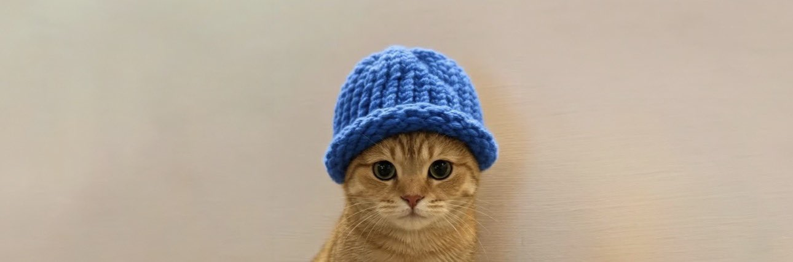
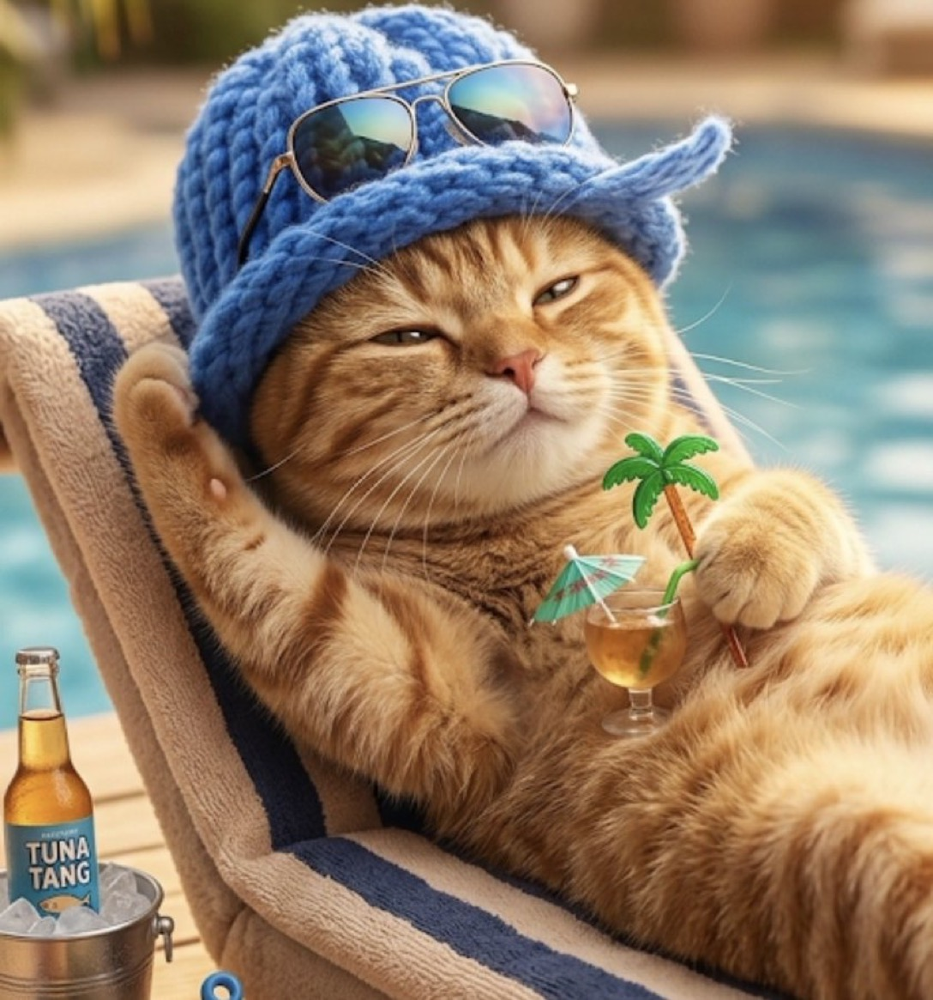
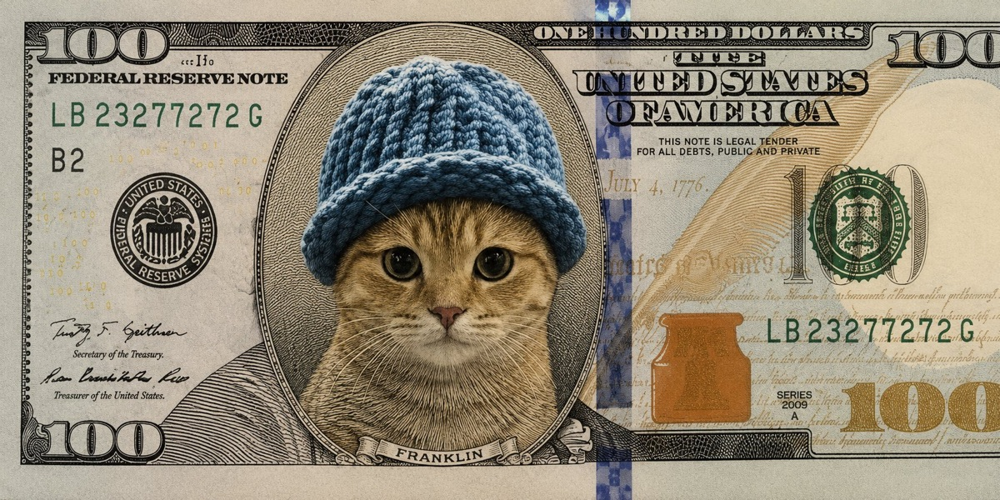
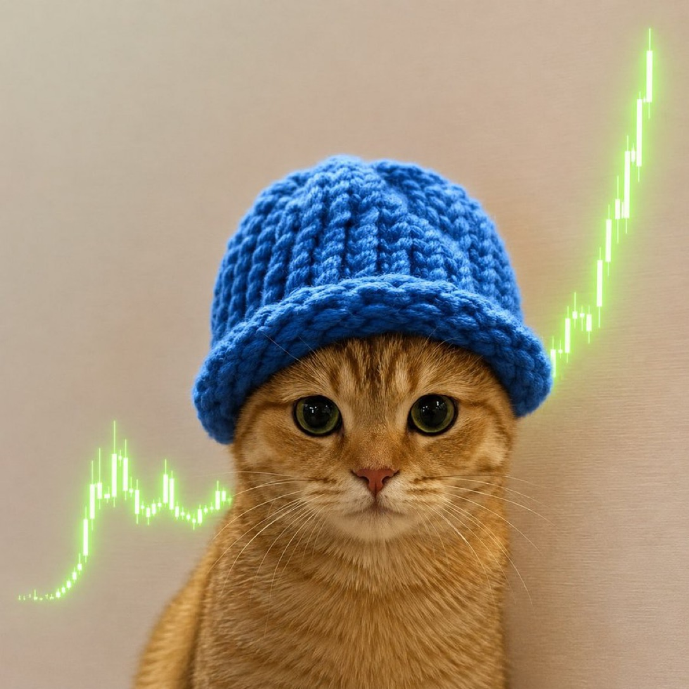
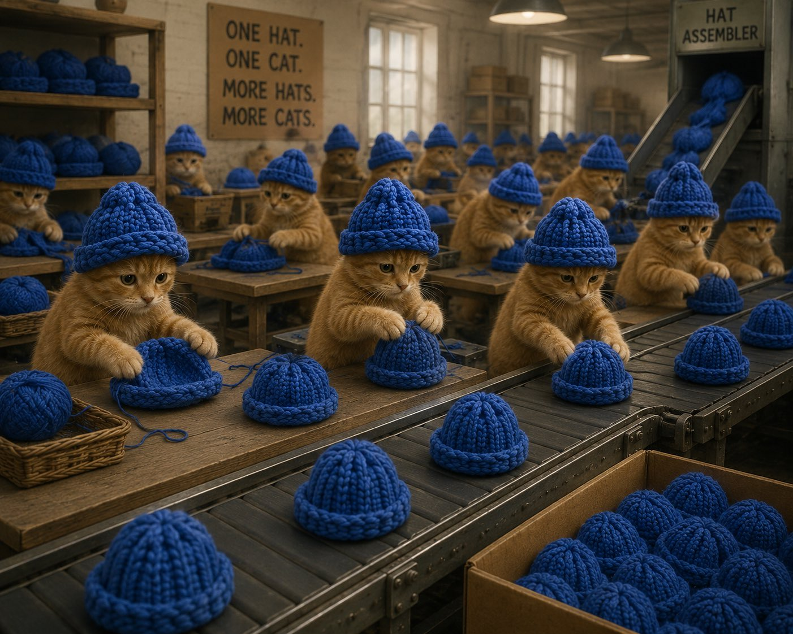
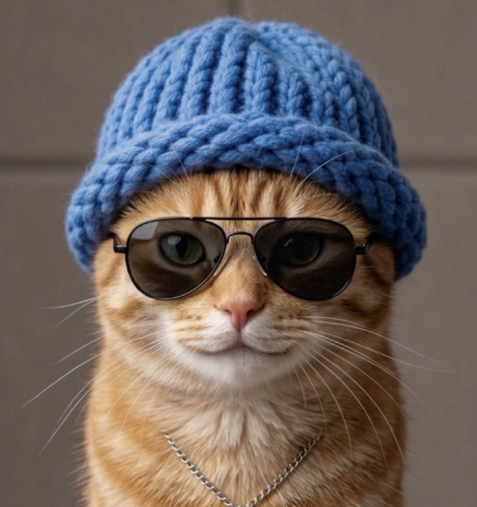
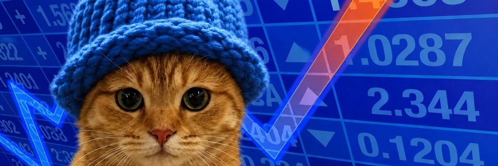
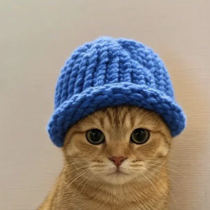

{kind=link}
Get a wallet
Download Phantom. It's free, it's clean, the cat approves.
every dog had its day. now the cat's got a hat.
one hat. one cat. zero plans.
Ticker: $WIF · Pair: USDC · Solana

Let's end things how they started.
Two years ago, the dog revived the trenches and lit up Solana.
Now the chain feels dead — everything's bleeding to zero.
So it's time to run it back.
New era.New PFP.Same energy.
catwifhat.
This is a cat. He is wearing a hat. The hat is blue. We are not sure he agreed to any of this, but he has stopped resisting, and frankly so have we.
catwifhat is the feline answer to a very famous dog. No utility. No roadmap. No quarterly investor call where someone says "synergy." Just a ginger cat in a hand-knit beanie staring directly into your portfolio.
If you're looking for fundamentals, the fundamental is the hat. If you're looking for a reason, the reason is the hat. Welcome to the litter.
Right-click, save, post. The cat belongs to the people now.






Download Phantom. It's free, it's clean, the cat approves.
Load up with SOL or USDC. The pair runs on USDC, keep some handy.
Grab $WIF on pump.fun, or swap on Jupiter. Paste the CA, double-check it, ape responsibly.
You're in. Hold the line. Post the cat. Touch grass occasionally.

$WIF is live on-chain (migrated to PumpSwap). Always confirm the contract address before you swap.